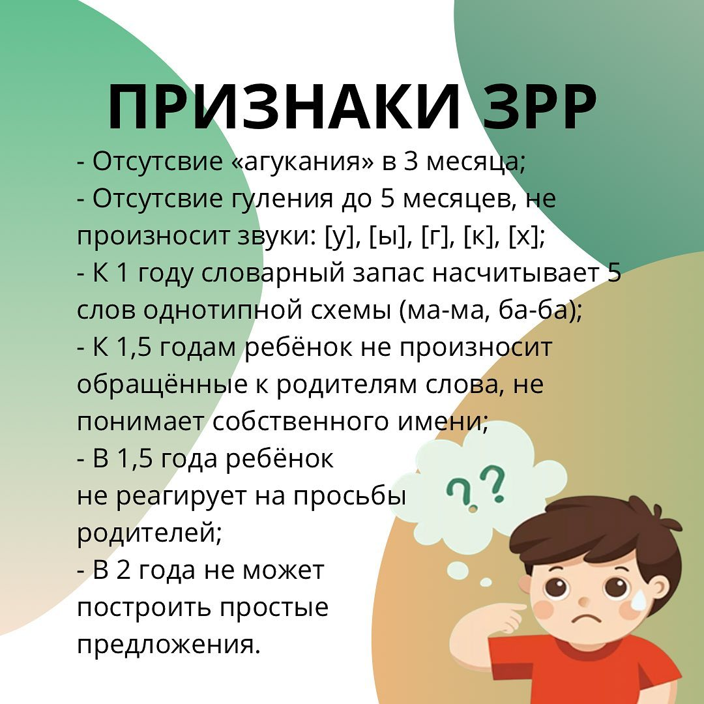
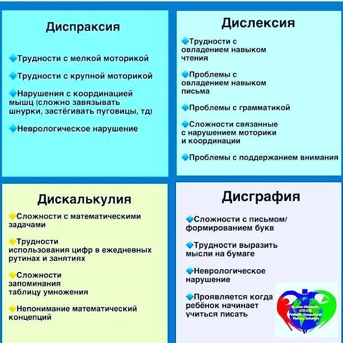
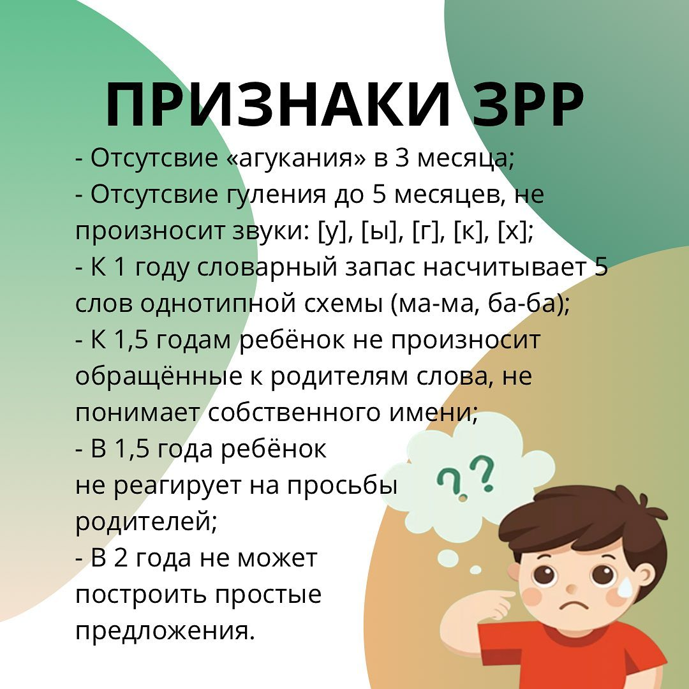
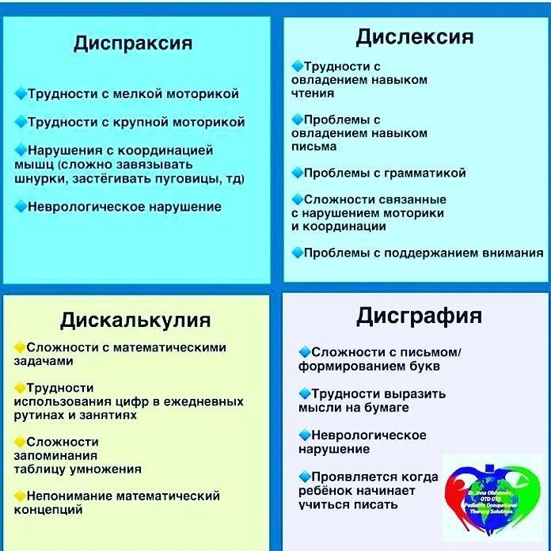

Метод Томатиса
Tomatis-терапия — это инновационный метод, разработанный французским врачом Альфредом Томатисом, который направлен на улучшение слуха, коммуникации и общего благополучия. Эта терапия использует звуковую стимуляцию, чтобы активизировать нейронные связи в мозге, что помогает людям с различными нарушениями, включая дислексию, аутизм, ADHD и другие.
Преимущества метода:
- Улучшение слуха и восприятия звуков;
- Повышение уровня концентрации и внимательности;
- Снижение уровня тревожности и стресса;
- Улучшение навыков коммуникации и социальной адаптации;
- Поддержка в обучении и развитии детей с особыми потребностями.
Аппарат RULISTEN
RULISTEN — уникальный аппарат, использующий звуковую терапию для улучшения слуха и общекоррекционных процессов. С помощью этого устройства мы помогаем детям и взрослым раскрыть свой потенциал и достичь успехов в обучении и социализации.
Аппарат FORBRAIN
Дети с радостью приходят на сеансы Forbrain. Они воспринимают процесс как игру и с неподдельным интересом слушают свой голос. А с микрофоном в руках можно ощутить себя настоящей звездочкой Forbrain так называется аппарат, работа которого основана на механизме передачи воздушной и костной проводимости. В процессе сеанса создается некий эффект дополнительной аудио- вокальной связи. По сути, это наушники с микрофоном, и специальными датчиками. Особенностью можно назвать то, что гарнитура копирует и усиливает голос во время говорения ребенка. Если у ребенка еще нет речи, может говорить взрослый. Таким образом звуковой сигнал проходит через костный слух.
Результаты этой методики довольно высоки:
📌Улучшается произношение звуков, беглость и плавность речи, громкость и ритм.
📌Повышается качество чтения и понимание прочитанного.
📌Корректирует разговорную речь и интонационную насыщенность.
📌Развивает музыкальные, вокальные и ораторские способности.
Приводите в наш центр своих деток. Тем самым внесете не только большой вклад в развитие малыша, но и получите море удовольствия от радостных глаз😍
Наши специалисты
Алина Смагулова

Смагулова Алина Нурлановна - дефектолог, томатис-терапевт. Общий педагогический стаж работы 29 лет, из них с детьми с ОВ с 1998 года. С 2004 по 2006 год, работая во вспомогательной школе интернате, вела приём детей с ОВ, в качестве дефектолога, в ПНД г.Усть-Каменогорска. С 2011 года по август 2024 работала директором коррекционного детского сада. В 2018 года прошла обучение по томатис терапии и до настоящего времени веду приём как томатис-терапевт и дефектолог в коррекционно-развивающем центре "Феномен".
Галерея
.png) 



Адрес
Наш адрес: г. Астана ул. Балкантау 92 2GIS
Контакты
Телефон: 8 777 985 70 61
Email: Smagulovaalina@mail.ru
Социальные сети
Следите за нами в Instagram